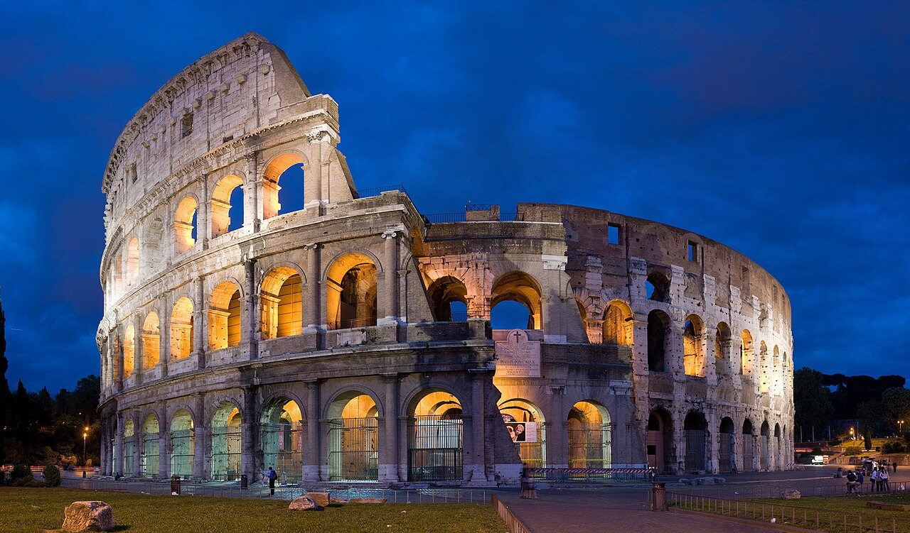

Головні місця
Рим вражає своїми масштабами. Тут античні руїни стоять поруч із жвавими площами, а за поворотом вулиці може відкритися справжній шедевр архітектури.
- Колізей — головний символ Стародавнього Риму;
- Римський форум — серце давнього міста;
- Пантеон — храм із неймовірним куполом;
- Фонтан Треві — одне з найвідоміших місць для фотографій;
- Ватикан — окрема держава та скарбниця мистецтва.

Що скуштувати
У Римі легко знайти смачну їжу на будь-який бюджет. Ми радимо спробувати класичну пасту карбонара, піцу з тонким тістом і, звісно, джелато. Порції тут ситні, тому краще не замовляти все одразу.
Мої враження
Найбільше запам’ятався вечір біля фонтану Треві. Навколо було багато людей, лунала музика, а вода в теплому світлі ліхтарів здавалася майже золотою. Саме в такі моменти розумієш, чому Рим називають вічним містом.